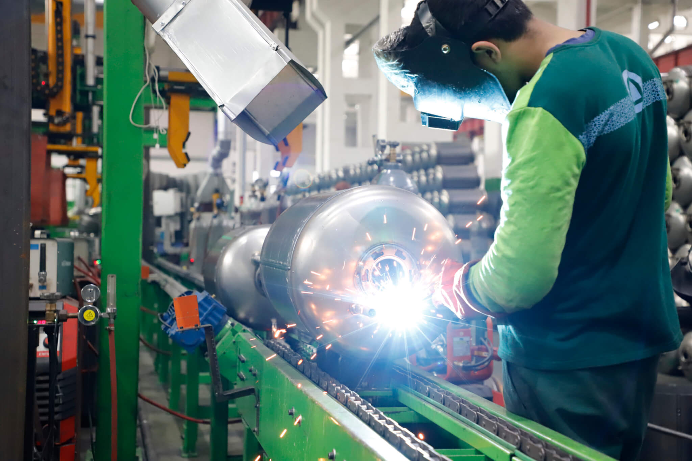
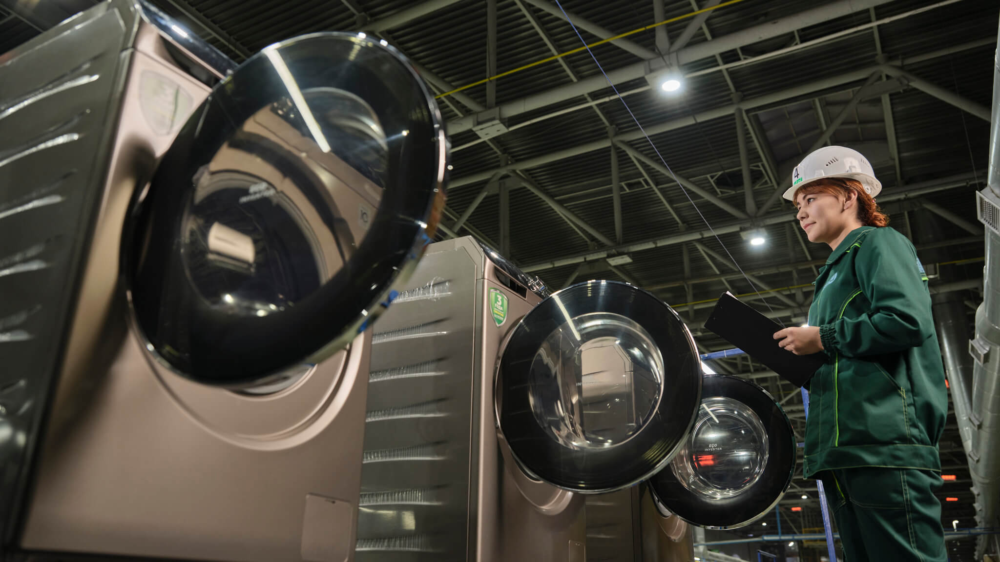
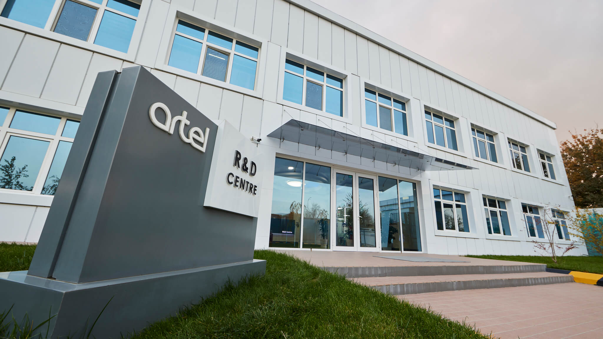

Artel Electronics becomes the first private manufacturing company in Uzbekistan to receive a credit rating from Fitch Ratings.
—The company currently exports to more than 20 countries and
employs more than 10,000 people in its operations.
—Artel opens a factory in Khoresm to produce electric motors
Artel becomes a partner of the Viessmann German company for the production of gas boilers.
—The company opens a factory in the city of Akhangaran for the production of TV sets.
Artel becomes an accredited supplier and partner of "Coca-cola Bottlers Uzbekistan".
— The company starts producing gas boilers under the Royal brand as well as extractor fans under the Artel brand.

The company starts production of automatic washing machines in cooperation with Samsung..
—In cooperation with Samsung, the company started the production of automatic washing machines.
A specialized R&D research and development center is starting to work, marking the beginning of the development of innovative potential.
—Logistics centre was opened in Rohat in Tashkent
Opening of the flagship industrial complex "Rohat" in Tashkent, which includes the production of refrigerators and components.
— Artel starts the production of electronic boilers under the
“Royal” brand.
— The company also began the production of
PC monitors for Artel and Samsung at the company’s factory site
in Zomin, Jizzakh.